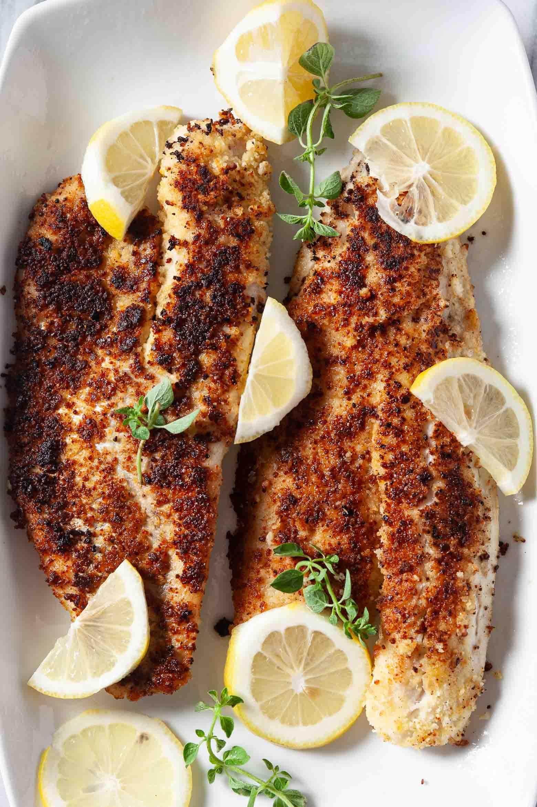
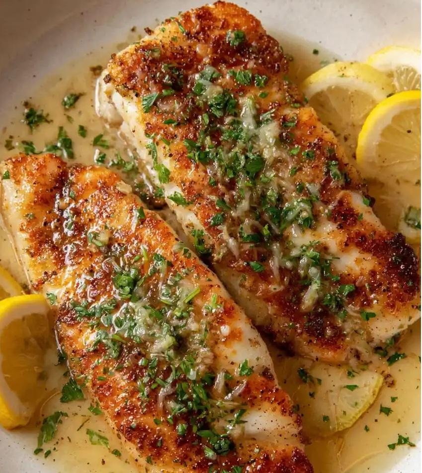
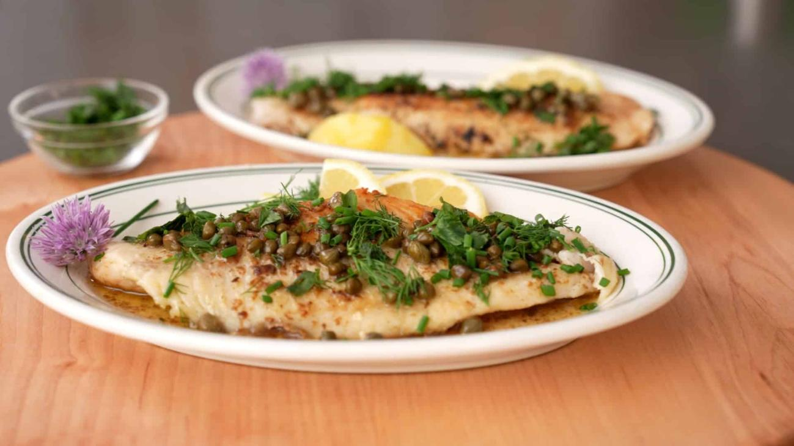

There's a version of this meal that gets cooked on a flat rock beside a lake somewhere in the Laurentians every summer, in a cast iron pan that hasn't been properly washed since 2011, by someone who caught the fish twenty minutes earlier. That version is always the best one. The oil is too hot, the fillets are slightly uneven, and nobody cares because the fish is so fresh it barely needs anything else.
This recipe tries to get as close to that as possible in a kitchen. The technique is simple and the ingredient list is short, because walleye doesn't need help. It's the best-tasting freshwater fish in Quebec, with white, flaky flesh and a clean flavour that holds up well to a crisp crust and a simple lemon butter finish. The goal is a golden exterior that cracks when you press it and a centre that's just cooked through.
The Fish
Start with the freshest walleye you can get. If you caught it yourself that day, you're already ahead. If you're buying it, look for fillets that are firm, translucent, and smell of clean water rather than fish. Walleye fillets are relatively thin, usually 1 to 2 centimetres at the thickest point, which means they cook quickly. That's an advantage: less time in the pan means less margin for error.
Skin-on or skinless works for this recipe. Skin-on fillets are slightly more forgiving because the skin holds the fillet together during flipping, but the skin needs to be scored lightly with a knife to prevent it from curling in the heat. Skinless fillets give you a more even crust on both sides if you're careful with the flip.
Pat the fillets completely dry before you do anything else. Moisture on the surface of the fish creates steam when it hits the oil, which prevents browning and makes the coating soggy. Dry the fillets with paper towel, press firmly, and let them sit uncovered on a rack for a few minutes if you have the time.
The Coating
The simplest shore lunch coating is flour seasoned with salt and pepper. It works. But a mixture of flour and fine cornmeal gives a slightly coarser, crunchier crust that holds up better and has more texture against the tender fish. The ratio doesn't need to be precise: roughly two parts flour to one part fine cornmeal is a good starting point.
Season the coating generously. Walleye is mild and the coating needs to carry flavour. Salt, black pepper, garlic powder, and a small amount of paprika for colour. Some cooks add dried thyme or old bay. None of those additions are wrong. Keep it simple the first time and adjust from there.
Dredge the dry fillets through the coating, pressing gently so it adheres evenly. Shake off the excess. The coating should be a thin, even layer, not a thick crust. Thick coatings absorb oil and turn heavy before the fish is cooked through.

The Pan and the Oil
Cast iron is the right pan for this. It holds heat evenly, gets genuinely hot, and gives a better crust than non-stick. A stainless steel pan works too. Non-stick is fine if that's what you have, but it won't get as hot and the crust will be paler and softer.
Use a neutral oil with a high smoke point: canola, vegetable, or refined sunflower. You want the oil hot enough that a pinch of coating dropped in sizzles immediately and firmly, but not so hot that it's smoking. Medium-high heat on most stovetops. Add enough oil to come about 3 to 4 millimetres up the side of the pan. This isn't deep frying, but it's more oil than you'd use for sautéing.
Let the pan and oil get fully up to temperature before the fish goes in. A pan that isn't hot enough causes the coating to absorb oil and turn soft before it can brown. If you crowd the pan the temperature drops and the same thing happens. Cook in batches if the fillets don't fit in a single layer with room around each one.
Cooking the Fish
Lay the fillets in the hot oil away from you, coating side down. Don't move them. Don't press them. Don't lift a corner to check after 30 seconds. Leave them alone for 2 to 3 minutes depending on thickness. The crust needs time to set and release from the pan on its own. If you try to flip too early, it tears.
You'll know when to flip by watching the edges of the fillet. As the heat moves up through the fish, the translucent raw flesh turns opaque white. When that opaque line reaches about halfway up the side of the fillet, it's time to flip. The crust on the bottom should be deep golden brown.
Flip once, carefully. The second side needs less time than the first, usually 90 seconds to 2 minutes. The fish is done when it flakes easily at the thickest point when pressed with a finger or a fork. Don't overcook it. Walleye goes from perfectly cooked to dry quickly, and dry walleye is a waste of a good fish.
Transfer to a wire rack or a plate lined with paper towel, never a flat plate directly, where the crust will steam itself soft. Season immediately with a small pinch of flaky salt.
"Walleye waits for no one. Have everything else ready before the fish goes in the pan. The sides, the plates, the sauce ingredients measured out, the people at the table."
The Lemon Butter
While the fish rests for a minute, make the sauce. It takes about two minutes and makes a real difference.
Wipe out the pan if it has any burnt coating bits, or use a small separate saucepan. Over medium heat, add a generous knob of butter, roughly 40 to 50 grams for four fillets. Let it melt and foam. When the foam subsides and the butter begins to smell nutty and turn a light amber colour, pull it off the heat. That's brown butter, and it has more depth and complexity than plain melted butter.
Off the heat, add a squeeze of fresh lemon juice. It will spatter, so stand back slightly. The lemon juice stops the butter from browning further and lifts all the flavour from the pan. Add a small amount of fresh flat-leaf parsley if you have it, finely chopped. Taste it. It should be rich, nutty, sharp, and bright. Adjust the lemon to your preference.
Spoon it over the fish just before serving. Don't pool it underneath where it will soften the crust. A light spoon over the top is enough.
The Shore Lunch Sides
The traditional Quebec shore lunch doesn't overthink the sides. The fish is the meal. What comes with it is there to round things out and soak up the butter.
Fried potatoes. Slice potatoes thin, par-cook them for a few minutes in salted water until just barely tender, then fry them in the same cast iron pan after the fish is done. Season aggressively with salt, pepper, and whatever dried herbs are on hand. They should be crisp on the outside and soft inside. This is not health food and shouldn't pretend to be.
Coleslaw. A simple slaw of shredded cabbage, a little carrot, and a sharp vinegar dressing cuts through the richness of the fried fish better than a mayonnaise-heavy version. Make it before you start cooking the fish so the cabbage has time to soften slightly in the dressing.
Crusty bread. For soaking up lemon butter. No further justification required.
Lemon wedges. Always more lemon on the table. Some people want considerably more acid than the sauce provides.

The Full Recipe
Ingredients, The Fish
- 4 walleye fillets, skin-on or skinless (150 to 200g each)
- 120g all-purpose flour
- 60g fine cornmeal
- 1 tsp salt
- ½ tsp black pepper
- ½ tsp garlic powder
- ¼ tsp paprika
- Canola or vegetable oil for frying
- Flaky salt for finishing
Ingredients, Lemon Butter
- 50g unsalted butter
- Juice of half a lemon (about 2 tbsp)
- 2 tbsp fresh flat-leaf parsley, finely chopped
- Salt and pepper to taste
Method
- Pat the fillets completely dry with paper towel. If cooking skin-on, score the skin lightly with a sharp knife in two or three places to prevent curling.
- Combine the flour, cornmeal, salt, pepper, garlic powder, and paprika in a shallow dish. Mix well. Dredge each fillet through the coating, pressing gently to adhere, and shake off the excess.
- Heat a cast iron or stainless steel pan over medium-high heat. Add enough oil to come 3 to 4mm up the side of the pan. When the oil shimmers and a pinch of coating sizzles immediately on contact, the pan is ready.
- Add the fillets in a single layer without crowding, coating side down. Cook undisturbed for 2 to 3 minutes until the crust is deep golden brown and the fish releases cleanly from the pan. Watch the edges: when the opaque line reaches halfway up the side of the fillet, flip once.
- Cook the second side for 90 seconds to 2 minutes until the fish flakes easily at the thickest point. Transfer to a wire rack and season with flaky salt.
- Wipe the pan clean or use a small saucepan. Over medium heat, melt the butter until it foams and the foam subsides. When the butter turns light amber and smells nutty, remove from heat. Add the lemon juice carefully, it will spatter. Stir in the parsley. Taste and adjust seasoning.
- Spoon the lemon butter lightly over the fish and serve immediately with fried potatoes, coleslaw, lemon wedges, and bread.
A Few Notes
On substitutions. This recipe works with any firm white-fleshed freshwater fish. Perch is the natural substitute and fries even faster given the smaller fillets. Pike works but requires more careful attention to bones. Lake trout can be pan-fried the same way but benefits from a shorter cook time given its higher fat content.
On timing. Walleye waits for no one. Have everything else ready before the fish goes in the pan. The sides, the plates, the sauce ingredients measured out, the people at the table. Fish cooked and rested for five minutes while someone sets the table is noticeably worse than fish served the moment it comes out of the pan.
On the shore lunch version. If you're actually cooking this beside a lake, the cast iron pan goes directly on a camp stove or a fire grate. Everything else is the same except the fried potatoes might take longer over uneven heat, the butter sauce might brown faster than expected, and the meal will be better than anything you cook at home regardless.

20+ years fishing Quebec's freshwater systems. Kayak angler, catch-and-release advocate, and founder of Sub Urban Anglers.
Read More About Me